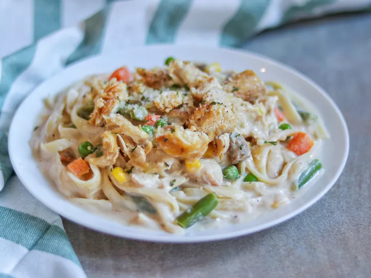

Chicken Alfredo Pasta

This is a recipe for making Chicken Alfredo Pasta
Chicken Alfredo Pasta Ingredients
These are the Ingredients neede to make a Chicken Alfredo Pasta:
- 1 pound uncooked fettuccine or linguine
- 2 boneless chicken breast halves, cooked and cubed
- 1 (16 ounce) jar Alfredo-style pasta sauce
- 1 (10 ounce) package frozen mixed vegetables
- 1 (4.5 ounce) can sliced mushrooms
- ⅓ cup milk
Directions
How to Make Chicken Alfredo Pasta Step-By-Step
- Fill a large pot with lightly salted water and bring to a rolling boil. Cook fettuccine at a boil until tender yet firm to the bite, about 8 minutes. Drain well.
- While the pasta is cooking, place cubed cooked chicken, Alfredo sauce, frozen vegetables, mushrooms, and milk in a large saucepan over medium-low heat. Cook and stir until chicken is heated through and vegetables are tender.
- Serve warm Alfredo and chicken sauce over cooked noodles.